Web Manual
Bridge Meter
操作マニュアル
Bridge Meterは、作業画面に小さく置いて使うmacOS用メーターです。 Macから出ている音、オーディオ入力、Bridge Pluginからの信号を切り替えて、 VU、ラウドネス、位相、スペクトラムを確認できます。
Input
入力を選ぶ
入力は、Bridge Meterのメニューから選びます。 Macから出ている音をすぐに見る場合は「System Audio Out」を選択します。 Bridge Pluginを使うとDAWから直接受信できるため、他のアプリの音が混ざりません。
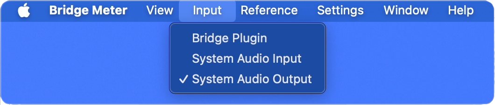
Meter Display
メーター部分をダブルクリックで表示を切り替える
| ダブルクリック | VU / Loudnessを切り替え |
|---|---|
| ⌘ + ダブルクリック | Analyzerに切り替え |
| Analyzerから戻る | ダブルクリックでVUへ |
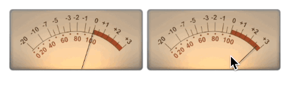
Reference
リファレンスレベルの設定
| 右クリック / Controlクリック | リファレンスレベルを選択 |
|---|---|
| Edit Custom... | Custom値を0.1 dB刻みで変更 |
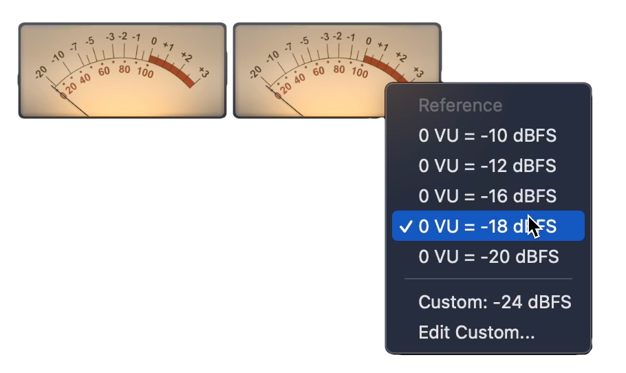
Panels
パネルを分離する
| Shift + ダブルクリック | 表示中のLoudnessまたはAnalyzerを分離 |
|---|---|
| 分離パネルを Shift + ダブルクリック |
Bridge Meter本体へ戻す |
| ⌘ + Shift + ダブルクリック | LoudnessとAnalyzerを一括分離 |
| 分離パネルを ⌘ + Shift + ダブルクリック |
まとめてBridge Meter本体へ戻す |
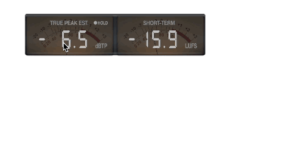
まとめて戻す時は、⌘ + Shift + ダブルクリックしたウインドウが合体後に表示されます。
Bridge Plugin
Bridge Pluginから受信する
AAX / VST3 / AU対応のBridge PluginをDAWに挿すと、 Bridge MeterでDAWからの表示用信号を直接受信できます。 プラグインはメーター表示用の信号だけを送信し、音声そのものは変更しません。
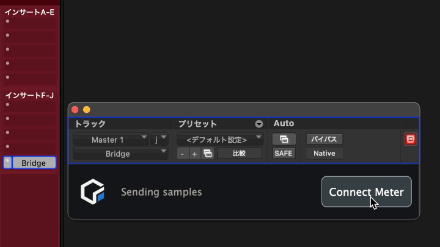
| Connect Meterボタンを押す | Bridge Meterを起動し、入力をBridge Pluginに切り替え |
|---|
Bridge Meterがすでに起動している場合も、ボタンを押すことで入力がBridge Pluginに切り替わります。
Pluginがなくなった時、元の入力がSystem Audio Out / Inputなら、その入力へ戻ります。
Detailed Manual
レイアウトセット
Windowメニューから、現在のパネル位置とサイズをレイアウトとして保存できます。 保存したレイアウトはメニューまたはショートカットで復元できます。
| Save Layout | 現在のパネル位置とサイズを選んだ番号に保存 |
|---|---|
| Layout 1〜5 | 保存したレイアウトを復元 |
| ⌘ + 1〜5 | 保存したレイアウトをショートカットで復元 |
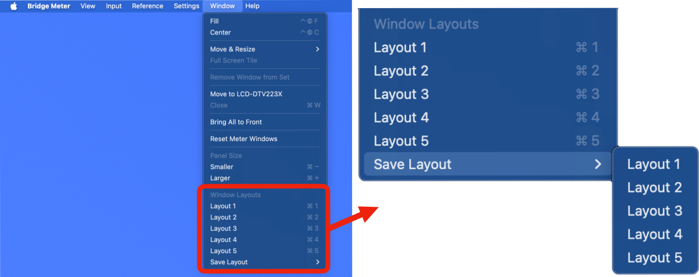
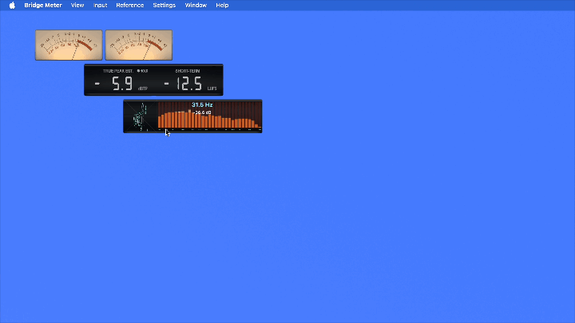
レイアウトセットに保存されるのは、各パネルの位置とサイズです。表示モードや分離状態そのものは保存されません。
Detailed Manual
VU設定
針の動きは、SettingsメニューのNeedleから選択できます。 Preset A / Bのほか、自分でカスタマイズしたプリセットも保存して使えます。
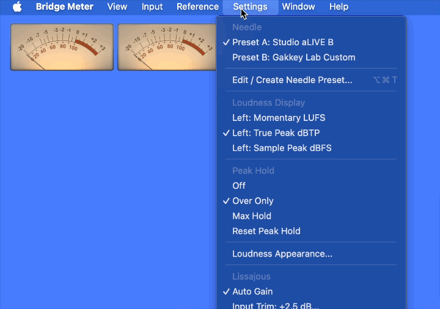
| Preset A / B | 針の動きのプリセットを選択 |
|---|---|
| Edit / Create Needle Preset... | 現在選択されているプリセットから編集を開始 |
| Save As... | カスタマイズした設定に名前をつけて保存 |
| Manage Needle Presets... | カスタムプリセットのリネームや削除ができます。 |
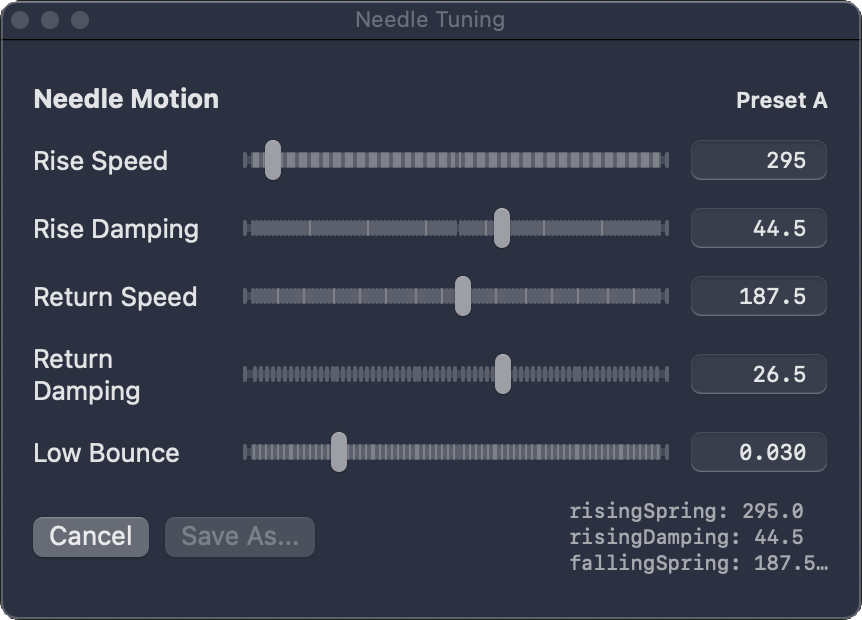
| Rise Speed | 数値が大きいほど、針が上方向へ速く反応します。 |
|---|---|
| Rise Damping | 数値が大きいほど上方向の動きが抑えられ、跳ね返りや飛び出しが少なくなります。 |
| Return Speed | 数値が大きいほど、針が下方向へ速く戻ります。 |
| Return Damping | 数値が大きいほど下方向の動きが抑えられ、戻りすぎや跳ね返りが少なくなります。 |
| Low Bounce | 0 VU付近へ戻った時の小さな跳ね返り量です。数値が大きいほど、0を少し越えて戻るような動きが出やすくなります。 |
Detailed Manual
ラウドネス設定
ラウドネスパネルを右クリック、またはControlクリックすると、 ラウドネス表示の設定メニューが開きます。
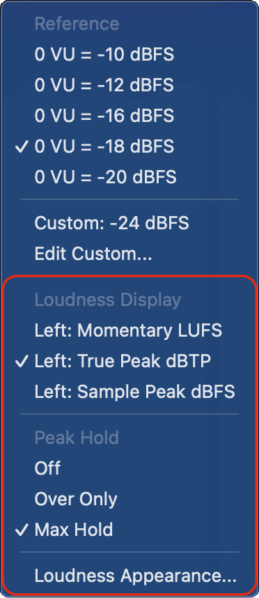
Loudness Display
ラウドネス表示時に、左側へ表示する値を選択します。
| Left: Momentary LUFS | Momentary Loudnessを表示します。短い時間範囲でのラウドネスを確認できます。 |
|---|---|
| Left: True Peak dBTP | True Peak（推定値）を表示します。サンプル間ピークを考慮したピーク値の目安として確認できます。 |
| Left: Sample Peak dBFS | Sample Peakを表示します。実際のサンプル値上のピークレベルを確認できます。 |
Peak Hold
ピーク表示のホールド動作を選択します。
| Off | ピークホールドを使用しません。 |
|---|---|
| Over Only | 0を超えた場合のみピークをホールドします。 |
| Max Hold | 検出された最大ピーク値をホールドします。 |
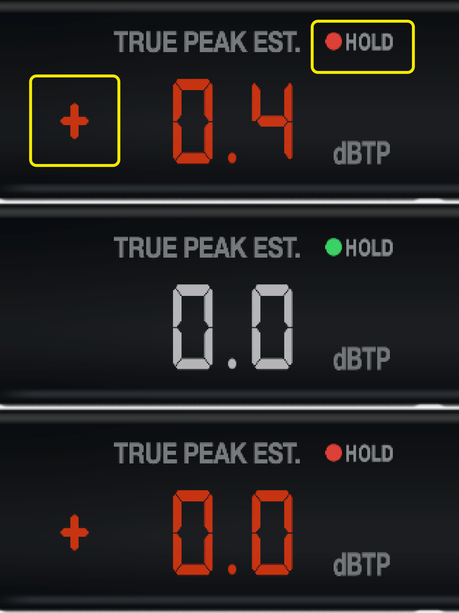
Peak Holdのリセット
ホールドランプ付近、または+/-表示付近をクリックすると、ピークホールドをリセットできます。
表示上は同じ0.0でも、内部的に0 dBを超えていない場合は緑ランプ、0 dBをわずかに超えた場合は+0.0と赤ランプで表示されます。
Loudness Appearance
ラウドネス表示の見た目とカラー表示を調整します。
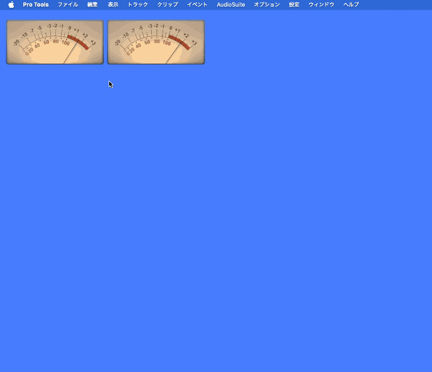
Display
| Glass | メーター全体のガラス表示の濃さを調整します。数値が大きいほど暗く濃い表示になり、数値が小さいほど透明に近くなります。 |
|---|---|
| Text | ラウドネス数値の明るさを調整します。数値が大きいほど文字が明るく表示されます。 |
| Show Peak Numbers Red When Over | ピーク値が基準を超えた時、ピークランプだけではなくピーク数値も赤く表示します。 |
Color Fade
| Enable Color Fade | ラウドネス値に応じたカラー表示を有効にします。 |
|---|---|
| Apply To | カラー表示を適用する範囲を選択します。デフォルトのNumbers Onlyでは数値のみに適用されます。 |
| LUFS Preview | 現在の設定で、ラウドネス値がどのように色変化するかを確認できます。上段はLUFS値、下段はRefを基準にした相対値です。 |
| Blue / Green / Yellow / Red | 各色へ切り替わる基準値を設定します。値はRefに対する相対値です。色ラベルをクリックすると、その色の有効 / 無効を切り替えられます。 |
Fade Amount
| White -> Blue Blue -> Green Green -> Yellow Yellow -> Red |
各色の間をどの程度なめらかに変化させるかを調整します。 数値が大きいほど、次の色へゆっくり滑らかに変化します。 数値が小さいほど、色の切り替わりがはっきりします。 |
|---|
Peak Hold Colors
| Hold Lamp Color | ピークホールド時のランプ色を選択します。 |
|---|---|
| Apply Color To Peak Numbers | ピーク数値にもホールドランプと同じ色を適用します。 |
| Reset All | ラウドネス表示の外観設定を初期値に戻します。 |
Detailed Manual
Analyzer設定
アナライザー表示は、現在のReference Levelに合わせて見やすいスケールに調整されます。
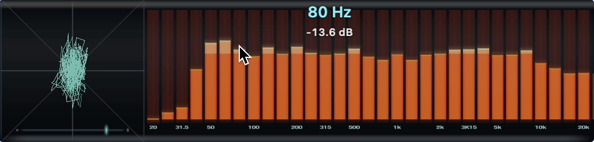
左側にはリサージュ表示、下部には位相メーター、右側にはスペクトラムアナライザーを表示します。
スペクトラムアナライザー上にマウスを重ねると、その位置の周波数と、カーソル高さに対応するdBスケールを確認できます。
Lissajous設定
アナライザーパネルを右クリック、またはControlクリックすると、アナライザー表示の設定メニューが開きます。 リサージュ表示には、Auto GainとInput Trimの追加設定があります。
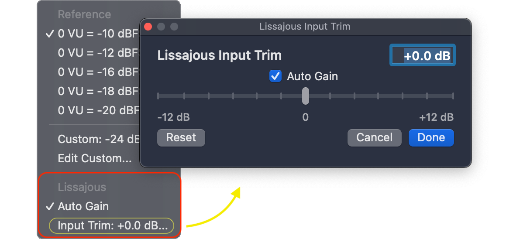
| Auto Gain | 入力レベルに応じてリサージュ表示のゲインを自動調整します。小さい信号は見やすく持ち上げ、大きい信号は表示が大きくなりすぎないように抑えます。 |
|---|---|
| Input Trim | リサージュ表示に入る信号レベルを手動で調整します。Auto Gainを使用している場合でも、最終的な表示サイズを好みに合わせて微調整できます。 |
リサージュ表示の入力レベルは、Reference Levelに応じた自動スケール → Auto Gain → Input Trim の順に調整されます。